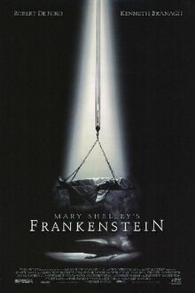

Course: Science Fiction & Religion
Lecture #3: Sentient Life
This time we are starting a section on what it means to be a sentient being. How do I justify this in religious terms? Simply that this issue is with us in ethics today in a big way. How we treat each other, and the issues involved in genetic engineering, as well as the idea of building machines that think is involved.
SENTIENT Comes from the Latin, SENTIRE to perceive, or feel.
- Responsive or conscious of sense impressions,
- Aware,
- Finely sensitive in perception or feeling.
It has to do with feeling or sensation and most distinctly with moral powers, the ability to perceive moral issues and feeling or emotion in that context.
This takes in all beings, human or otherwise, or a able to discern consciously the reality around them and reflect on that.
In science fiction this theme is brought up often, especially in regard to created beings and the ethics of whether or not they should be created.
SHOW: YouTube Turing Test -- LINK (Length 4:42 min:sec)
FRANKENSTEIN by Mary Shelly could be called the first science fiction novel as well as her first novel.

It was conceived in 1816 when her husband, Percy Shelly, Lord Byron and herself agreed to write tales of the supernatural inspired by German ghost stories they had been reading.
Mary was the only one to complete her story and she told of how the idea had come from a nightmare she had.
She was not quite 19 when she began writing it and it was finished by 1818.
It is based on gothic tales of terror and on the medical practice called GALVANISM which used electric currents for medical treatment. Also included were the then known theories of the origins of life on Earth and the myth of Prometheus, who in Greek myth brought fire to humans.
To the Greek story is added the Roman myth of Prometheus plasticator who animates a human figure of clay.
Dr. Frankenstein creates a monster of terrible strength and bulk who inspires fear and loathing. It understands its rejection and when Frankenstein refuses to create a mate for it, it goes on a terrifying trail of murder.
Dr. Frankenstein pursues his creation to the arctic but dies trying to destroy it. The monster disappears into the frozen waste to commit suicide.
This is widely regarded as the origin of modern science fiction but is also a discourse on the concept of the "noble savage" in which essential goodness of natural being is corrupted by malevolence.
Later we will discuss another way of creating beings using magic of the Kaballah, this is the GOLEM, believed to have been created in Prague in 1599 by a Rabbi. If this account is right, this golem is lifelessly waiting re-animation in a synagogue attic in Prague. We will discuss this in “HE, SHE AND IT.”
OTHER BOOKS DEALING WITH SENTIENT HUMAN CREATIONS
I can't begin to mention all the works dealing with human creations that are sentient but here are a few.
FRANK HERBERT has a trilogy about a computer that thinks its God. Beginning with Destination; Void and continuing with The Jesus Incident and The Lazarus Effect. Particularly in The Jesus Incident the ship which took humans to the stars now believes humans should worship it,
PHILIP DICK’s Do Androids dream of electric sheep, Blade Runner; and, of course, the new Battlestar Galactica with non-Theistic cylones and polytheistic humans.
CLIFFORD SIMAK has written several about robots who are sentient. Project Pope being the most prominent.
Melinda Snodgrass of Albuquerque won a writers guild award for this episode which has been called a timeless tale of personal rights.
SHOW: Star Trek the Next Generation / Season 2 Measure of a Man (3:17)
SHOW: Star Trek the Next Generation / "The Offspring" (3:17 / min:sec)
SHOW: “Short Circuit” clip- how this scientist determines if #5 is alive, ie,
Sentient (time 2:30 / min:sec).
The question in these clips is: Is it even right to create life, especially sentient life? Or are there to many things that can go wrong so we shouldn't even attempt it.
QUESTIONS TO DISCUSS
- With so much that can happen in the attempt to create artificial intelligence, is it ethically right to even try?
- "Measure of a man" brings up the issue of slavery. If we can create not one but many thinking machines; what should their rights be?
- Are we libal to end up with machines like Herberts SHIP or the computer HAL in 2001 who actually turn on their creators and rule over them?
- Can you think of any other books, shows, etc. dealing with this issue? (Termanator I, II, III; Battlestar Galactica; Blade Runner)
SENTIENCE; PART II. POPE, VITANULS, HE SHE AND IT
These are three different types of stories dealing with sentience in different ways.
Pope of the Chimps deals with the evolution of a few of the great apes in to sentient beings. Questions involved here are involved with questions like: Does developing a religion make beings sentient?
The Vitanuls by John Brunner deals with the loss of sentience in humans. This is an eerie story and deals with the idea, found in many religious traditions, that there are only so many souls or spirits to go around. We will discuss that as we do the story.
Finally, He, She and It is concerned with the creation of sentient beings, one by magic, one by science. The issue of whether it is even ethical to create beings as tools will be discussed.
We will also watch a couple of clips, totaling about 18 minutes.
POPE OF THE CHIMPS - SUMMARY
Hal Vendelmans, one of the researchers in a project of working with Chimps and signing, finds out he is going to die of Leukemia.
He wants to use his death to teach the chimps that humans are not immortal.
It’s decided that he can let the alpha chimps, that is, the most intelligent ones know he is dying. These include Leo, a 20 year old and the leader, and Grimsky, a 43 year old male.
Chimps begin meeting and using different signs that humans can't decipher. Some are recognized, "shirt", "hat", "human", "change", "banana" and "fly"
When Leo was asked directly what one of major new signs was he replied, "Jump high, come again"
Researchers begin to think they may be evolving a religion.
One of the underlying purposes of the project was to understand how the 1st humanoids crossed the intellectual boundary that separates animals from humanity, ie, what makes one sentient.
Question: What is sentient? What is that boundary between animals and humanity? Does developing a religion make you human?
Two things happen:
- the chimps become more vocal, make more sounds.
- Leo begins wearing Hal Vendelmans hat and shirt but only when the chimps are in a certain grove (nicknamed the Holy grove by the researchers).
Humans have been called the "noisy animal." Is it our vocalization that makes us human? The chimps seem to think so.
How much of religion is sensitive rather than cognitive? Humans use insense, bells, bull roarers, special clothes. Is this necessary to religion? Is it religion that makes us human, or is it because we are human that we have religion? Does this make the chimps "human"?
The researchers ask the question: Is Leo and the others playing at being human with Leo a high priest wearing the dead god's clothes giving him "divine attributes."?
Grimsky begins to die tho not ill.
There is a ritual distribution of meat while Leo wears Hal's hat. Is this communion?
Leo gives Grimsky "last rites" by putting Hal's shirt over his (Grimskys) shoulders.--uses new signs inter by humans as "ecclesiastical language"
Leo says: "Grimsky now be human being."
Soon other chimps, young ones, are found dead, what seems to be ritual murder.
When confronted, Leo says "When humans go away, they become a god, when chimps go away, they become humans."
Leo says god has given orders that all chimps are to become humans as soon as possible.
This pecking order is part of most life forms whether in the barnyard, jungle, or among humans. It is humans who, being sentient, know it is part of life, most other species just live it out "the law of the jungle".
It is humans who project this pecking order to a life after death, that one moves to some higher level.
In the western traditions (Judaism, Christianity and Islam) there is a hope of resurrection to an immortal, imperishable body.
Mormons believe they pre-exist and males will one day be gods ruling their own planets with their spirit wives.
Those Christians who believe the end is coming hope never to die but simply be transformed while alive when Jesus comes again.
If you are Buddhist or Hindu and/or believe in reincarnation you hope to have a better birth next life and eventually reach Mokse or Nirvana after thousands of lifetimes and thus never be born again but live in bliss always.
Thus, one would have to argue that the chimps developing a religion in which they believe they will become human, as humans become gods makes them fully sentient. Is this what sentients is all about? Or is there more to it.
Judy Veldaman, Hal's wife comes and speaks to Leo. Tells him that Hal was looking down and Leo was sending to many chimps to god to soon. They are having to be put in a holding area. She gives Leo Hal's wristwatch which Leo adds to his ecclesiastical paraphernalia.
There are no more killings but the chimps are still very much into their religion.
THE VITANULS -- Summary
BY JOHN BRUNNER
This story is given from a Hindu point of view. It involves the ethics of overpopulation and extending life. This is an excellent story from this perspective looking at what would happen if more people lived on Earth than in all the previous time humans have been here.
Barry Chase, an American with the world Health Organization is being shown around a maternity hospital in India. He was supposed to be conducting a survey of the methods in use.
One doctor, a Dr. Kotiwala, is considered to be a virtual saint. This is his last day of delivering babies and he will then become a SUNNYASI, that is, a holy ascetic wanderer who leaves behind everything of this world.
The matron points out that nine months before this time there had been a big religious festival which people regarded as auspicious for increasing their families. Thus the hospital was packed with delivering mothers.
The matron explains that the doctor was influenced by the Jainas, a group still in existence who believe that AHIMSA or non- injury, to any living thing is wrong. The strictest Jainas wear cloth over their mouth and nose so as not to breath in any living thing, or jiva as their called. They use brooms to carefully sweep any living things out of their path when walking.
They discuss the new drug which is an anti senility, anti death pill that is now on the market. Naturally everyone wants it.
In Hindu belief, the soul is reborn (called reincarnation) until it achieves perfection by eliminating all athe bad karma and accumulating good. Then one is absorbed into the all, or BRACHMAN. Thus, death is not seen as an evil, but a stepping stone.
Dr. Kotiwala's last delivery he is spooked by the babys eyes. Nothing can be found wrong, but he knows something is. When he looks in the baby's eyes he sees NOTHING.
About two years later Dr. Chance comes to find Kotiwala, now Ananda (which means bliss in sanskrit) Bhagat and catches up to him in a small village. Kotiwala has seen many children born with nothing there, including one in this village.
Since he was the first one to recognize what is now called vitanuls, or no life. What is meant is there is no mind, according to the western doctors but no soul would be closer.
There was an increasing sharp rise in these babies until about 80% were being born as congenital imbicils. This was true all over the world.
Everything that makes a person human, ie SENTIENT, had been left out. The anti senility treatment had been made public a few days after these doctors first meeting and everyone who could was getting in line for it.
To quote Dr. Chance:
Just as we were congratulating ourselves on sorting out the row about the anti-senility treatment, here comes the most fantastic crisis in history and it's not going to break, it's going to get worse, and worse, and worse. . .Over the past two weeks the rate has topped eighty percent. . . Out of every ten children born last week, no matter what country or continent, eight are MINDLESS ANIMALS."
As it turned out on checking the first kids with this imbecility were born on that particular day.
Dr. chance still doesn't get it. Kotiwala has to explain what happened. As many people are alive in this twenty-first century as have ever lived since the evolution of human beings. On the day they met, that number was exceeded for the first time.
He explains its not the lack of mind, but the lack of soul.
Chance still doesn't understand thinking it is absurd that there can be a finite number of souls stored in some cosmic warehouse.
Kotawala's answer is to go into the mountains and die so his soul is set free.
DISCUSSION
This story calls medical ethics into question. There has been much discussion already about whether children everywhere should all be inoculated against disease. By doing this, there are more dying of famine and overpopulation is a serious problem.
It seems the more we try to beat mother nature at her game, the more calamities we bring upon ourselves from other places.
Witness the fact that after only 60 years of using anti- biotics they are already becoming ineffectual against many strains of bacteria.
Even if one doesn't believe in reincarnation as in this story, we are creating a hellish world for many people.
What is your reaction to this story?
In Kabbalah, especially Isaac Luria, and in Mormonism as well as others it is believed that all souls were created at the same time at the very beginning of time. There are a finite number.
What is your reaction to this idea?
HE, SHE AND IT
by Marge Piercy
SYNOPSIS
This story takes place on two fronts. On the one hand it is placed about 60 years in the future in a world where the multi-national corporations run things because most governments have fallen and in which a person gives themselves to a company for life much as they do in Japan today.
The other parallel story takes place in Prague, Chez. in 1599 and following. This is told by Shira's grandmother, Malkah, about her several greats back grandfather (Rabbi Lowe), who was chief rabbi at that a time. It concerns how he made a GOLEM to protect the Jewish community there.
Shira works for one of these multis but is going thru a divorce. The company awards custody of her son, Ari, to the father. He takes Ari for a two-year stint on a space station so Shira cannot even see him.
Shira decides to go home to her grandmother, who raised her and lives in what’s known as a "free town". ie, towns that contract work for the corporations but are not connected to any of them. The Free towns have a "wrap" over them to protect from UV radiation. To go outside of it, one has to cover up or risk cancer.
The cities, now called GLOPS were partially under wraps, or domes, but the system had not been completed before the govt. stopped functioning. There were still elections, but politicians were ineffectual. Every quadrant was managed by the remains of the old UN, the eco-police.
There had been a great famine and plagues which killed 2 billion people and the eco police had authority over earth, water and air outside domes and wraps. otherwise, the multis ruled their enclaves and free towns defended themselves as they could. The glop rotted under the poisonous sky, ruled by feuding gangs and overlords. The ice caps were melting, and many coastal areas were under water.
Everything was done thru the NET, computer hook ups which were built right into people’s temples so one could simply plug in to the computer net and do whatever they were trained to do. Computer literacy was an absolute must. Moving in and out of large Artificial Intelligence data bases was something taught to all children in the free towns but only the more educated in the glop. The ability to access the world's information and resculpt it was the equivalent of the difference between the propertied and the landless in the past.
This is the world of Shira and her grandmother (born in 1987).
Shira had been raised by her grandmother rather than her mother and, upon going home, learns why Her mother was not around during 'her childhood. She is an "information pirate" wanted by the multinationals for stealing information on drugs, etc., believing knowledge should be free to all people.
Since Shira is a cybernetic expert, she goes to work with Avarrm, a man who has created a CYBORG, that is, a being made up of both biological and mechanical parts, who is programmed to protect their town. Yod, as he's called, looks human and is a secret experiment.
There had been a world covenant that robots not resemble people as when they had there had been serious problems. People were afraid that machines would replace them, not in dangerous jobs but in well paid and comfortable jobs. Thus, mobile robots were to be obviously identifiable as machines and given only sufficient intelligence for their rote tasks. The penalty for building human-looking robots was blacklisting and death.
Time Shift – 1599 CE
Now we shift to Prague in 1599 where the chief rabbi and kabbalist, Judah Loew, realizes they will need a protector.
SHOW: Introduction 1920 film clip The Golem from 23 minutes
Golem of Prague LINK (Time 5:39)
There had been many problems for the Jews of Europe and with the arrival of the Dominican, Father Thaddeous, an inquisitor from Spain, he knows there will be more problems.
Rabbi Loew debates Thanddeus by invitation and it is a draw, which he knows is dangerous, especially with Good Friday and Easter coming. After fasting and prayer, he has a dream in which a voice says, "you must make a golem of clay to rise and walk the ghetto and save your people."
A GOLEM, is being in human form made not by ha-shem but by another human thru esoteric knowledge, particularly by the power of words and letters. The Sefer Yezirah, the mystical book of creation, contains what you must master to form a golem with the power of the Names of God and the power of letters and numbers. the word golem means "matter lump."
Kabbalistic tradition tells of many sages and saints who created a golem for a mystical rite. They would make and unmake these moving clay men, joining themselves to the power of creation, and in the chanting and the act, achieve ecstasy. It was one of the crowns of glory of a truly holy person.
Sages also were said to make golems for some private use like running messages, cleaning the house, etc. like robots. These were both mute and stupid.
Rabbi Lowe hesitated but when the silversmith was arrested on a trumped-up charge, he knew he had to proceed. He took two men with him, snuck out of the ghetto to the graveyard and they began digging clay while Loew chanted in a low sing song.
When they had enough clay, he lay down a wooden form shaped like a man and packed clay over the shape. the shape was as tall and broad as the largest soldier.
He begins to pray, rocking and chanting. He feels the power of creation coming thru him. He chants all the combinations of letters and vowels and the hidden names of God, the sacred numbers that built the atoms of the universe.
Blue fire crackles over the clay doll as if rivulets of mercury ran over the surface and then sank inside. The clay begins to smoke and to heat dull red and then brighter and brighter. It turns into flesh before their eyes.
They chant and carry the Torah around the golem seven times and the golem begins to breath, open his eyes. Lowe puts the mark of ha shem on his forehead which gives him life.
The rabbi names him Joseph and begins learning by first learning to walk so they can get back into the ghetto before dawn. The golem accidently kills 2 watchmen but as the golem says, he is there to protect.
Rabbi Lowe begins teaching Joseph what he is to do to act like a man. Like eating, for him a brick and a potato are the same. He begins to go out at night to patrol and spy.
Time Shift -- 2060
Shira begins teaching Yod how to act more human since his predecessors went berserk before they could be trained.
Malkah tells Shira that Yod is a person, not human, but a person none the less. Malkah had helped program him.
She begins training Yod and finds he can feel pain and pleasure. She asks, "Do you consider yourself alive?"
He says, "I'm conscious of my existence, I think, I plan, I feel, I react. I consume nutrients and extract energy from them. I grow mentally, if not physically. I feel the desire for companionship…”
Yod knows that Avarram had destroyed all the cyborgs before him. They were all conscious, fully alive minds.
He is upset saying: "If your mother had killed eight siblings of yours before your birth because they didn't measure up to her ideas of what she wanted, wouldn't you be alarmed.?" He fears being destroyed also.
Yod begins doing what he was meant to do, be hooked into the Net to monitor. Five people had been assassinated and made into vegetables due to attacks.
Embedded in the base, plugged in, a person was vulnerable to mental warfare. The mind could be forced into a catatonic loop. A program could be launched that stopped breath or the brain shocked to death. Traps could be set by pirates or raiders which could ambush and kill and steal creations. Raiders came from both the multis and free-lance pirates.
By monitoring the base, Yod saved Malkah from this fate. He remains plugged into the net for days. Malkah is afraid to get back on the net. Yod succeeded in killing both of the raiders. People from the multi that Shira had belonged to. She knew them to be assasins for her corperation.
Since they have been accessed, they must reconstruct the base and put in other security. Meanwhile, Yod and Shira begin becoming intimate, even though he is a cyborg.
Riva, Shira's mother arrives with her lover, Nili who is a Palestinian. Nili is also made up of a lot of machine parts, but essentially human, albeit, an enhanced human.
Nili points out that the ability to read and write belonged to the church except for heretics and Jews. The Jews, as people of the book, have always considered getting knowledge. part of being human. However, in their own day, few read, most plug into virtual reality stymie’s to have experience and few plug in and access information on a scale never before available. The many know less and less and the few more and more.
Y-S, Shira's multi, asks her to meet with them and come back to work, saying she can have Ari if she does. However, it is a set up and Riva is "killed" and Yod hurt. Shira is afraid they know about Yod. However, there is no body for Riva. The fact is, this was staged so she would be thought dead. However, Malkah and Shira won't know this for some time.
Time Shift -- Prague, 1600 CE
Joseph has discovered on his nightly outings that there is a plan to invade the Ghetto in the works for Good Friday. The Rabbi decides to appeal to Johannes Kepler and other scientists for help. They find one of their group has been burned for heresy in Rome recently. However, they get a letter which will allow them into see the prince and hopefully get help.
Joseph Golem goes, takes a jewel to the prince, and begs for help. However, all he gets is "Ill see what I can do" from the prince. On the way home he is accosted by robbers and ends up killing them all, including a woman. The Rabbi is not happy. However, in the process he learns about a weapon, a club, he can make to use for protection.
"A people in trouble is perceived as a troublesome people." Thus word comes that the emperor is doing what he can to stop trouble but he can't prevent Fr. Thaddeus from leading a good Friday procession to the gates of the Ghetto. The emperor waffles since he can't have soldiers fire on a religious procession.
Joseph and the men try to shore up their defenses as best they can. He organizes as many as will fight, though some will not do violence. As Joseph watches the rabbi he thinks, like father, like son, knowing that Rabbi Lowe would not appreciate that.
As Joseph thinks about the battle, he realizes he doesn't know if he can die. He knows he can be wounded, but he heals fast.
The few soldiers try to stop the mob, but the huge number wins out and a battering ram is brought and after a time, batters down the gate. Joseph grabs it and uses it as a club. They lose some fifty dead and many wounded but the battle of 'Good Friday' is over, thanks to Joseph.
Joseph is a hero of the ghetto, but The Rabbi realizes that the time of danger is passing, since the emperor has gotten rid of Thaddeus and a more accommodating dominican is promised. He worries that the longer Joseph remains in the world, the more he will come to regret it, and age is catching up with him.
The decision is made to "unmake" Joseph. They have to prepare with prayer and fasting. Joseph, upon trying to leave on his own suddenly feels weak. He feels downcast and afraid of losing his strength.
The Rabbi and other two men tell Joseph they have a task in the attic to perform. Joseph is puzzled but Rabbi Lowe is sure he must undo what he has done. Joseph obeys by lying down, but says "I haven’t done anything bad, I carried out what you wanted, I want to live, I want to be a man.
However, The rabbi is chanting and circling him with the Torah and Joseph can't rise. He fights dying saying, No, No. I deserve to live. I fought for you, saved you, my life is sweet to me.
The rabbi chants all the gates of the holy name and alphabet running backwards now. Slowly Joseph stops speaking, his features blur, he looks like he is melting. His face looks like a rock and his fingers become one lump, but there the process stops.
The Rabbi fabricates a story, covers him with a sheet, and padlock the door to the attic so no one can come in. He can be brought back to life again if the need arises.
Shortly thereafter, Rabbi Lowe dies. AS Malkah relates, though the need for him has arisen, the knowledge of how to awaken him is lost. till now (this referring to Yod).
Time Shift -- 2060
Malkah mourned Riva's death. Word comes from her multi that her husband and son are now back in Nebraska in the enclave and apologies for the "assassins" who killed her mother and others.
They decide to send a message robot to Ari, for his birthday. When it return they here disturbing voices in the background telling Ari to make his mom come.
Malkah, Avarrm and Shira decide they must enter the Y-S base thru their computers, using Yod. They need the information on its war plans and aims.
They enter the Y-S enclave and thru virtual reality it is as if they are really there, flying over the area. Yod teaches them how to become transparent, so they won't be seen, but they are attacked by metallic harpies, and this is as real as if it were physical. Yod also teaches them to turn themselves into whatever they need, digging machines, or whatever.
Yod finds and stores the information they need. then they left a computer virus. They make it out, exhausted but successful. On examining the material, they find that Avarrm and his work are the cheif target. They question Shiras ties to her grandmother and, of course, her mother’s activities.
Shira realizes that until she gets her son back, she is vulnerable. A trip to the glop, where Nili has contacts and possible allies might be found for Shira, et al is planned. They bargain and fight their way to a group in the glop Nili knows and it is here Shira discovers her mother, not dead at all. It was, in fact because of her mother that they had not been killed while trying to find this group.
After establishing allies in the glop for war with Y-S, Yod and Shira head for the Y-S compound in Nebraska to kidnap Ari. It is a difficult operation, but they succeed, even though Josh, Shira's ́ X, is killed in the process. They return to Tikva, her town, with Ari and realize the war is not over with Y-S.
A complaint had been filed that Yod was not paid. The city council was going to find out what he really was. They would have to vote on whether he was a citizen of Tikva or Avarrms
tool.
He says at the meeting: "I'm a cyborg but I am also a person. I think and feel and have existence just as you do."
The decision had to be made, and his nature known within the week as an attack from Y-S was expected soon.
Y-S wants to extradite Yod as a murderer. However, they have reason to believe he is a cyborg and want him for that reason. They meet with Y-S thru the net in a conference room. Josh, her X is there, and she realizes he's not dead.
They simply say if Avarrm, et. al. don't turn over the cyborg they will send assassins every week into their base so all their effort will be used in defending and rebuilding. It would ruin their economy.
They want Yod to become the progenitor of a race.
Shira asks Josh a question which he answers wrongly, and she realizes its not him. They want Shira back to handle the new cyborgs they will build but she sees this as trafficking in people.
The city council must decide if Yod is property or a citizen with the free will to decide if he wants to go to Y-S. Yod writes a speech to deliver to the council the next night. The council split down the middle so no decision was made.
Avarrm programs Yod to self-destruct and take as many Y-S people with him as possible. It is his choice when he can do it. Yod makes sure Shira and Malkah are home, not in Avarams lab while he is taken and during his self-destruct sequence.
Yod agrees to this as he realizes he is protecting the town and the people he cares for by doing so and this is important to him. He goes with the Y-S security people in the morning.
Nili comes in while they wait for word of Yod. Malkah says to her: "Yod was a mistake. You’re the right path, Nili. It's better to make people into partial machines than to create machines that feel and yet are still controlled like cleaning 'robots. The creation of a conscious being as any kind of tool--supposed to exist only to fill our needs--is a disaster."
Suddenly there is a huge explosion, they run and discover that Avarrm's lab has exploded, and he has been killed. All his notes and work of the past 20 years were gone.
Shira access the message Yod had told her to after he died. He tells her that he has taken Avarrm and his lab and records of his experiments with him in death. "I want there to be no more weapons like me. A weapon should not be conscious. A weapon should not have the capacity to suffer for what it does, to regret, to feel guilty."
He says he wants to be sure there are no more conscious beings created. That is the one good thing he feels he has done with his death.
Later Malkah reflects on it saying: "It was inexcusable to create a sentient being for any other reason than to live its own life. In the myth of Pygmalion, we assume that she would lover her sculptor, but Shaw knew better. Each one of us wants to possess ourself; only fools willingly give themselves away. Slavery produces the slave revolt."
Shira discovers Avramms logs at Malkah's home, briefly toy with the idea of recreating Yod as a companion. She realizes that is wrong and carries the crystals etc. to the recycling plant. She had set him free.
HE, SHE AND IT - CONCLUSIONS
Like many of the other stories, this one deals with the ethical dilemma of creating life to serve us. The fascinating thing about this one is the magical creation of a GOLEM which is part of the kabbalistic lore. It is believed that Rabbi Lowe did indeed create a golem who is still in a synagogue attic in Prague.
What are your reactions to this story?
Is it ethical to "play God" in creating life?
What about the future that Piercy sees, that Piercy sees, is it a likely one?
CONCLUSIONS TO WHOLE SECTION
We have discussed a number of issues in the whole.
- We tend to see sentience in terms of what we humans see traits that are like us.
- There is also a tendency to superimpose human morality, whatever system we come from, upon our understanding of sentience in others.
- Is it right, or ethical, to create life in our own image. If the writer sees humanity as less than perfect, does the created being show the same imperfection? Frankenstein is a good case and point.
- Does creation determine the right to control or destroy what has been created? Are they property or free to choose?
- How much does one’s religious presuppositions determine how the story will evolve?